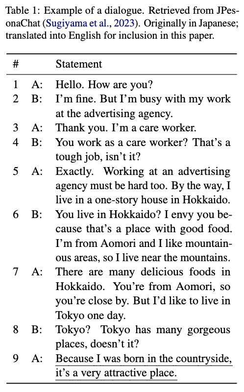
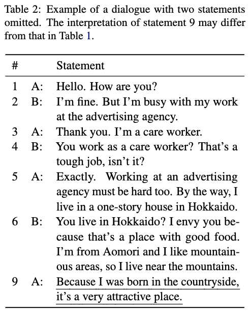
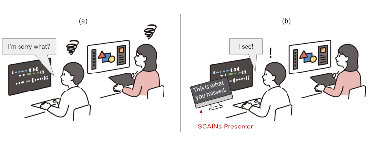
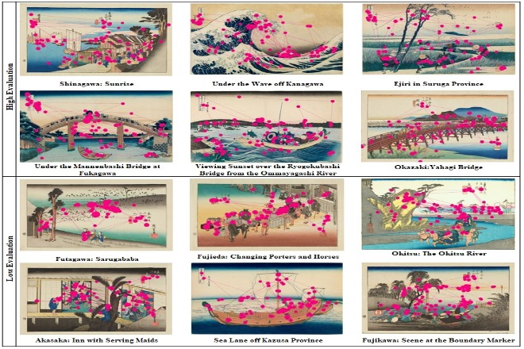
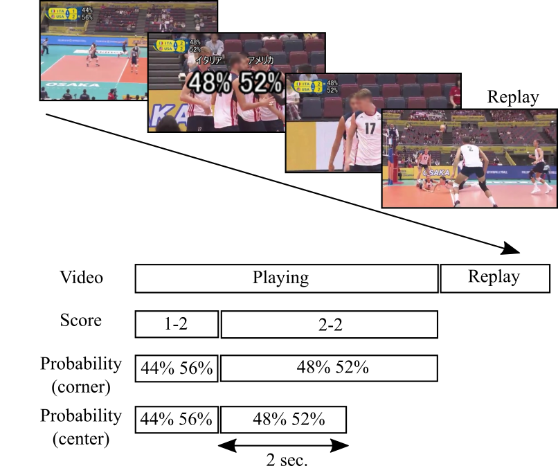

Context-aware language processing


A sentence is interpreted based on its context. The interpretation of a sentence can vary depending on the context in which it is used. I propose a method for illustrating the influence of natural-language context in a clear and intuitive manner. Specifically, a large language model (LLM) can rephrase a sentence to make it more specific, incorporating words from the context. The rephrased sentence conveys the interpretation of the original sentence in its context using natural language.
Related work
王斌宇, 市川雅也, 椎久翔太, 市川淳, 前川知行, 竹内勇剛, "異文化コミュニケーションにおける指示詞の空間認識の違い," ヒューマンインタフェース学会論文誌, vol. 27, no. 3, pp. 177-186, 2025. [Link]
Tomoyuki Maekawa and Michita Imai, "Identifying Statements Crucial for Awareness of Interpretive Nonsense to Prevent Communication Breakdowns," Proceedings of the 2023 Conference on Empirical Methods in Natural Language Processing (EMNLP), pp. 12550–12566, 2023. [Link]
Tomoyuki Maekawa and Wataru Takano, "Spatial representation of context-dependent sentences and its application to sentence generation," Advanced Robotics, vol. 31, no. 15, pp. 780-790, 2017. [Link]
Interactive AI systems

AI-based systems can improve interactions between humans and machines, as well as between humans themselves. For instance, a system can highlight important statements during a spoken conversation to ensure that the speakers don't miss crucial information. Another system can search for ads relevant to the topic of the conversation between users, making the ads more appealing to the users. These systems have the potential to influence user behavior and mindset.
Related work
Hikaru Matsuzaki, Tomoyuki Maekawa, Michita Imai, Kentaro Ishii, "PassStyles: Graphical Authentication Using Mixed Face Styles," IEEE Access, vol. 13, pp. 165411-165428, 2025. [Link]
Aoto Tsuchiya, Tomoyuki Maekawa, and Michita Imai, "SCAINs Presenter: Preventing Miscommunication by Detecting Context-Dependent Utterances in Spoken Dialogue," Proceedings of the 29th International Conference on Intelligent User Interfaces (IUI), pp. 549–565, 2024. [Link]
Ryoichi Shibata, Shoya Matsumori, Yosuke Fukuchi, Tomoyuki Maekawa, Mitsuhiko Kimoto, and Michita Imai, "Conversational Context-Sensitive Ad Generation With a Few Core-Queries," ACM Transactions on Interactive Intelligent Systems (TiiS), vol. 13, no. 3, pp. 1-37, 2023. [Link]
Minami Inoue, Tomoyuki Maekawa, Ryoichi Shibata, and Michita Imai, "The Effect of Response Suggestion on Dialogue Flow: Analysis Based on Dialogue Act and Initiative," Proceedings of the Annual Meeting of the Cognitive Science Society (CogSci), vol. 45, pp. 1974-1980, 2023. [Link]
Ryoichi Shibata, Shoya Matsumori, Yosuke Fukuchi, Tomoyuki Maekawa, Mitsuhiko Kimoto, and Michita Imai, "Utilizing Core-Query for Context-Sensitive Ad Generation Based on Dialogue," Proceedings of the 27th International Conference on Intelligent User Interfaces (IUI), pp. 734-745, 2022. [Link]
Human preference prediction

Humans need to be able to predict the likes and desires of others in order to form and maintain social relationships. It's surprising that humans can accurately predict an individual's preferences by observing their responses to just a few items. I am exploring how humans select samples and adjust their mental models of others' preferences.
Related work
Hikaru Matsuzaki, Tomoyuki Maekawa, Kentaro Ishii, and Michita Imai, "Interactive-SmartClerk: A Recommender Robot System Sharing Preferences with Customer," Proceedings of the 2025 5th International Conference on Artificial Intelligence and Application Technologies, AIAT '25, pp. 73–79, 2026. [Link]
Yuka Nojo, Tomoyuki Maekawa, Yuri Sato, and Kazuhiro Ueda, "Relating aesthetic-value judgment to perception: An eye-tracking and computational study of Japanese art Ukiyo-e," Proceedings of the Annual Meeting of the Cognitive Science Society (CogSci), vol. 45, pp. 2282-2288, 2023. [Link]
Yuta Watanabe, Yosuke Fukuchi, Tomoyuki Maekawa, Shoya Matsumori, and Michita Imai, "Inferring Human Beliefs and Desires from their Actions and the Content of their Utterances," Proceedings of the 9th International Conference on Human-Agent Interaction (HAI), pp. 391-395, 2021. [Link]
Cognitive science of watching sports

Sports can be seen as a probabilistic process. Before a game starts, it is uncertain which team will win. The probability of winning changes as the game progresses. At the end of the game, spectators know which team has won. I am studying the connection between the change in winning probability and the level of interest spectators have in watching the game.
Related work
Tomoyuki Maekawa and Kazuhiro Ueda, "How to Enjoy Watching One-Sided Sport Games," 2020 12th International Conference on Knowledge and Smart Technology (KST), pp. 177-181, 2020. [Link]
Tomoyuki Maekawa and Kazuhiro Ueda, "Displaying Winning Probabilities in Volleyball Interests Audiences Sensitive to Probability," 2019 11th International Conference on Knowledge and Smart Technology (KST), pp. 82-87, 2019. [Link]
Tomoyuki Maekawa, Hidehito Honda, and Kazuhiro Ueda, "Measure of the Ability Dominance of Tournament Systems and Subjective Judgment," 2018 10th International Conference on Knowledge and Smart Technology (KST), pp. 13-18, 2018. [Link]